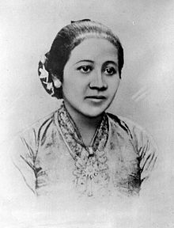

CURICULUM VITAE
rovidatulh@gmail.com
Sistem Informasi
UIN Syarif Hidayatullah Jakarta
Nama Panggilan: Rovi
TTL : P.Tello, 24 Juni 1999
ALamat : Jl Kertamukti pisangan ciputat timur, tangerang selatan
2016-sekarang : Komunitas Mahasiswa Minangkabau (KMM) Ciputat
2019-sekarang : Himpunan Mahasiswa Sistem Informasi
2004-2010: SDN 01 Bais
2010-2013: SMP Nurul Ikhlas
2013-2016: SMA Nurul Ikhlas
2016-Sekarang: UIN Syarif Hidayatullah Jakarta